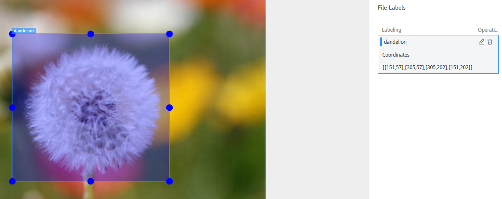
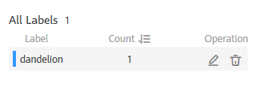

Before data labeling, consider how to design labels. The labels must correspond to the distinct characteristics of the detected images and are easy to identify (the detected object in an image is highly distinguished from the background). Each label specifies the expected recognition result of the detected images. After the label design is complete, prepare images based on the designed labels. It is recommended that the number of all images to be detected be greater than 100. If the labels of some images are similar, prepare more images.
- During labeling, the variance of a class should be as small as possible. That is, the labeled objects of the same class should be as similar as possible. The labeled objects of different classes should be as different as possible.
- The contrast between the labeled objects and the image background should be as stark as possible.
- In object detection labeling, a target object must be entirely contained within a labeling box. If there are multiple objects in an image, do not relabel or miss any objects.
Labeling Images
- On the Label Data tab page, click the Unlabeled tab. All unlabeled images are displayed. Click an image to go to the labeling page.
- Left-click and drag the mouse to select the area where the target object is located. In the dialog box that is displayed, select the label color, enter the label name, and press Enter. After the labeling is complete, the status of the images changes to Labeled.More descriptions of data labeling are as follows:
- You can click the arrow keys in the upper and lower parts of the image, or press the left and right arrow keys on the keyboard to select another image. Then, repeat the preceding operations to label the image. If an image contains more than one object, you can label all the objects.
- You can add multiple labels with different colors for an object detection ExeML project for easy identification. After selecting an object, select a new color and enter a new label name in the dialog box that is displayed to add a new label.
- In an ExeML project, object detection supports only rectangular labeling boxes. In the Data Management function, more types of labeling boxes are supported for object detection datasets.
- In the Label Data window, you can scroll the mouse to zoom in or zoom out on the image to quickly locate the object.
- After all images in the image directory are labeled, click ExeML in the upper left corner. In the dialog box that is displayed, click OK to save the labeling information. The Label Data page is displayed. On the Labeled tab page, you can view the labeled images or view the label names and quantity in the right pane.
Synchronizing or Adding Images
- Add: You can quickly add images on a local PC to ModelArts and synchronize the images to the OBS path specified during project creation. Click Add. In the dialog box that is displayed, click Add Image and add images. The total size of all images uploaded in one attempt cannot exceed 8 MB. The size of a single image cannot exceed 5 MB.
- Synchronize Data Source: You can upload images to the OBS directory specified during project creation and click Synchronize Data Source to quickly add the images in the OBS directory to ModelArts.
- Delete: You can delete images one by one, or select Select Images on Current Page to delete all images on the page.

The deleted images cannot be recovered. Exercise caution when performing this operation.
Modifying Labeled Data
After labeling data, you can modify labeled data on the Labeled tab page.
- Modifying based on images
On the dataset details page, click the Labeled tab, click the image to be modified. The labeling page is displayed. Modify the image information in the label information area on the right.
- Modifying a label: In the Labeling area, click the edit icon, enter the correct label name in the text box, and click the check mark to complete the modification. The label color cannot be modified.
- Deleting a label: In the Labeling area, click the deletion icon to delete a label from the image.
After the label is deleted, click the project name in the upper left corner of the page to exit the labeling page. The image will be returned to the Unlabeled tab page.
Figure 1 Editing an object detection label

- Modifying based on labels
On the dataset details page, click the Labeled tab. The information about all labels is displayed on the right.
Figure 2 All labels for object detection
- Modifying a label: Click the edit icon in the Operation column. In the dialog box that is displayed, enter the new label name and click OK. After the modification, the images that have been added with the label use the new label name.
- Deleting a label: Click the deletion icon in the Operation column. In the displayed dialog box, select the object to be deleted as prompted and click OK.